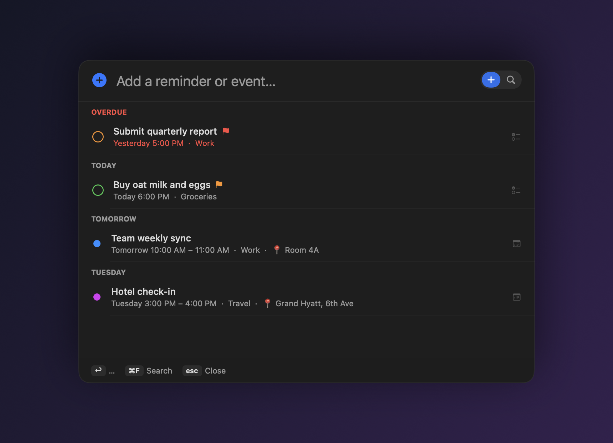
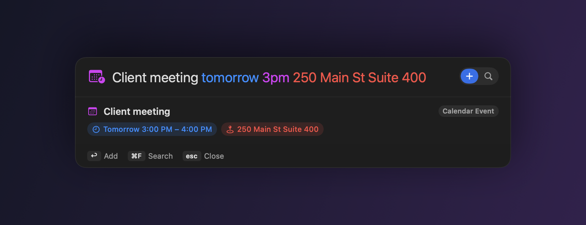
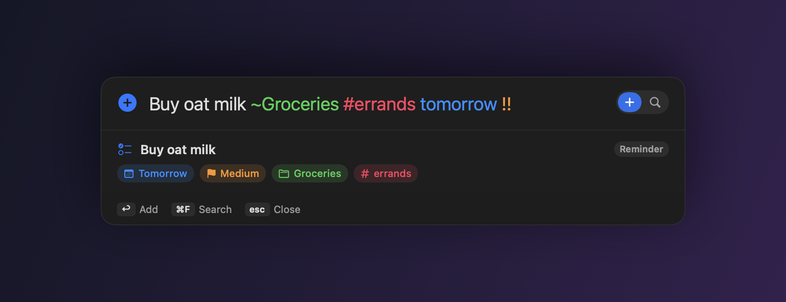
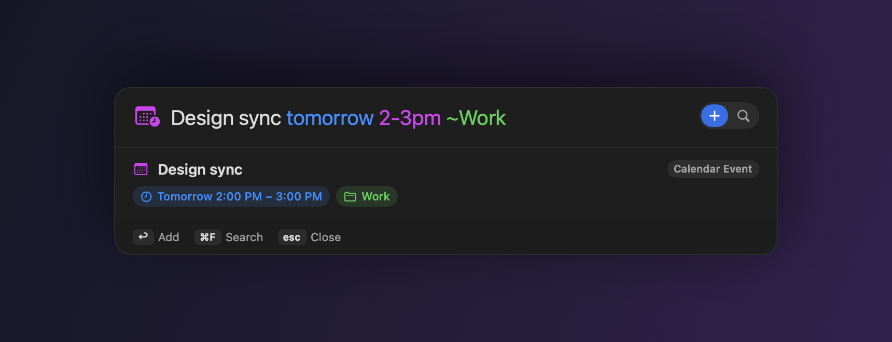
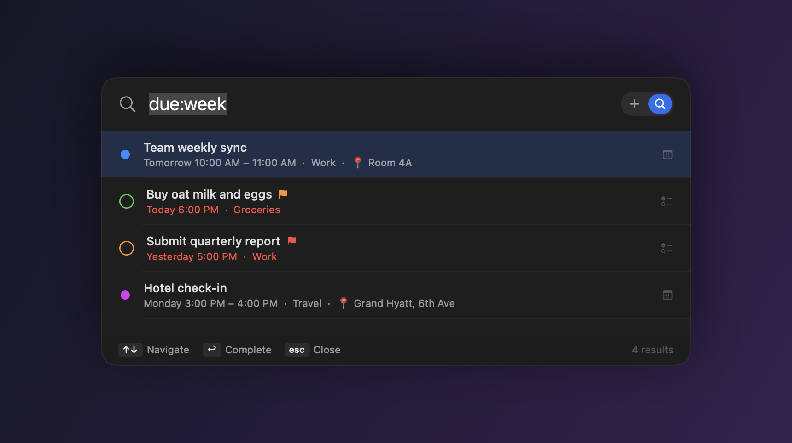

Press ⇧⌘A from any app to glance at your overdue, today and upcoming items — then type in plain English, 中文 or 日本語 to add a Reminder or Calendar event, with the time, place, priority and recurrence parsed for you.

Nextor is a free, open-source macOS menu-bar app for Apple Reminders and Calendar. Hit ⇧⌘A anywhere and the panel opens to your agenda — overdue, today, and the next few days, grouped. Type the way you think (in English, Chinese or Japanese) and Nextor decides whether it's a reminder or a calendar event, pulls out the time, location, priority, list, tags and recurrence, and saves it — no app-switching, no forms. Everything runs locally on your Mac.
A time range or a duration makes it an event. A place or a meeting word makes it an event. Everything else is a reminder.
| Design review tomorrow 3pm 30min | → Calendar event, 3:00–3:30 PM |
| Team sync Fri 9am-10am | → event with a time range |
| Client meeting tomorrow 3pm 250 Main St | → event, address → location 📍 |
| Buy oat milk ~Groceries #errands !! | → high-priority reminder in a list, tagged |
| Standup every Monday 10am | → repeating reminder, weekly on Monday |



Opening the panel shows overdue, today and upcoming items grouped by day, so you see what's next before you type.
A Spotlight-style panel drops in over any app (shortcut is customizable) and returns focus when you're done.
Times, durations, ranges, repeats, lead-time alarms, priority and locations — parsed from the way you actually type.
Knows a meeting at an address is an event, and extracts the location automatically.
Daily/weekly/monthly, multiple weekdays (every mon wed fri), and ends like ×10 or until Friday.
A Today glance plus unified search across Reminders and Calendar — is:event due:week. Reschedule or complete in place.
Misadd? ⌘Z. Paste a list and add every line at once with ⌥↩.
Everything is local. Optional on-device Apple Intelligence refinement — nothing leaves your Mac.

A free, open-source macOS menu-bar app for Apple Reminders and Calendar. Press ⇧⌘A from any app to see your overdue, today and upcoming items, then type in plain language to add a reminder or calendar event — Nextor parses the time, location, priority and recurrence for you.
Press ⇧⌘A anywhere and type naturally, e.g. Design review tomorrow 3pm 30min or 买牛奶 周五. Nextor decides whether it's a Reminder or a Calendar event, fills in the details, and saves it to Apple Reminders or Calendar.
Yes — the parser and the interface are fully localized for English, 中文 and 日本語. Weekdays, times, durations, recurrence and locations are understood in each language.
A time range or a duration (9am–10am, 3pm 30min) makes it a Calendar event; a specific time with a place or a meeting word also becomes an event with the address as its location; everything else is a Reminder.
Yes — free and open source under the MIT license. No account, no tracking, no subscription.
No. Everything runs locally and writes directly to Apple Reminders and Calendar. The optional Apple Intelligence refinement is opt-in and stays on your device.